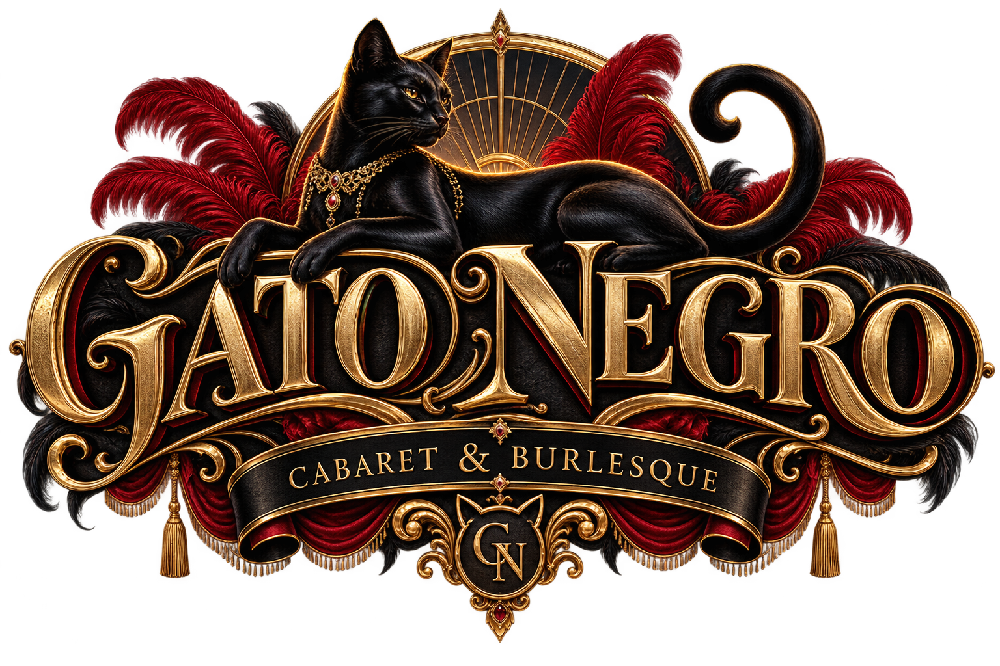

Solicitud recibida
Gracias por atreverte a subir al escenario.
Tu solicitud de audición fue enviada correctamente. Nuestro equipo de casting la revisará y, si tu perfil avanza a la siguiente etapa, te contactaremos por correo electrónico.
Mientras tanto, respira, confía y sigue creando.
Volver al formulario